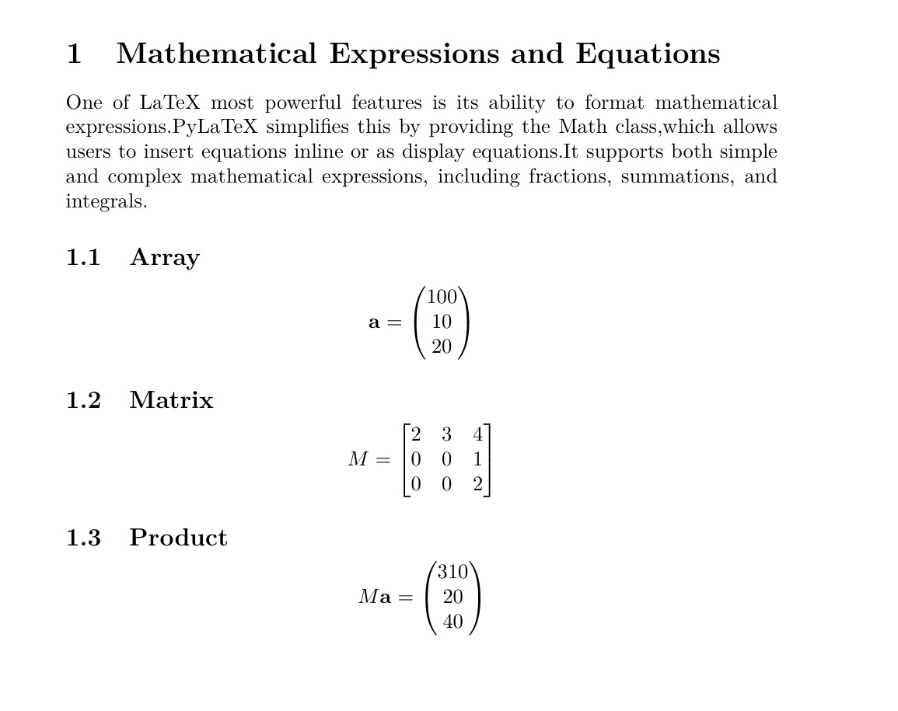
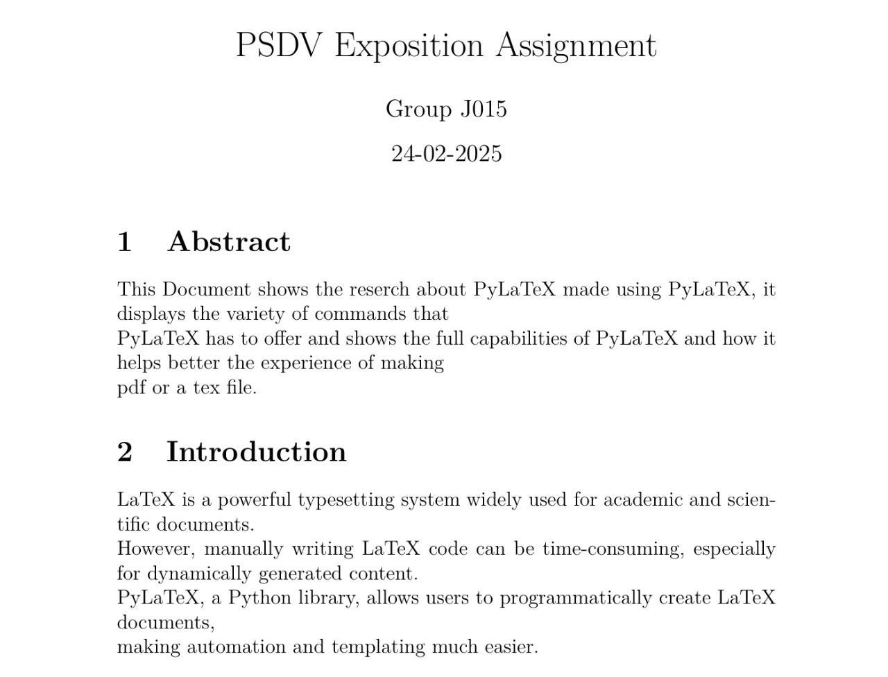

Introduction
LaTeX is a powerful typesetting system widely used for academic and scientific documents. However, manually writing LaTeX code can be time-consuming, especially for dynamically generated content. PyLaTeX, a Python library, allows users to programmatically create LaTeX documents, making automation and templating much easier.
Key Features
- Automated Document Creation
- Table and Figure Handling
- Mathematical Notation Support
- Modular and Reusable Components
- Integration with Data Sources
Installation
To install PyLaTeX, use the following command:
pip install pylatexKey Features & Explaination
- Creating and customizing LaTeX documents with Python.
- Handling sections, tables, math formulas, images, and more.
- Accessing the LaTeX preamble to include custom packages
- Easily generating PDFs from your LaTeX code.
- Modular and Reusable Components
- PyLaTeX offers an intuitive way to integrate Python’s flexibility with LaTeX’s powerful document formatting
Benefits of using pyLaTex
- Dynamic Document Creation: PyLaTeX allows you to generate documents dynamically using Python code. This is especially useful for generating reports based on data or automatically creating complex documents.
- Automation: You can automate repetitive tasks, such as generating academic papers or reports, saving time and reducing errors.
- Integration with Python Tools: PyLaTeX integrates seamlessly with Python's data processing tools. You can easily create plots, generate tables from data, and perform calculations within your Python code before embedding them into your LaTeX document.
- Customization: You can fully customize the layout, structure, and content of your LaTeX document. Whether you’re creating a simple article or a comprehensive thesis, PyLaTeX provides flexibility.
Code Basic Example
- Basic Operations
- Classifiying text
- Advanced Formatting
- Creating custom pagestyles
- Advanced Features
- Lists
In using PyLaTeX, first we need to create a document class variable and specify it's type. This can be done as follows:
doc = Document(documentclass = "basic")Other types availble are article, book, report, beamer. Others attributes which can mentioned inlcude fontsize, fontenc, page numbers, orientation, page size etc. After creating the document we need to add content to it. This can be done as:
doc.append("The content you like to add")After creating the whole document, can download the generated doc as pdf or as tex file using:
doc.generate_pdf("Doc name") # to downlaod as pdf file. There is an attribute called as clean_tex.
# This is initially True. If false, creates a tex file along with the pdf.
doc.generate_tex("Doc name") # to download as tex file.
You can also specify the compiler to use. If not specified uses the compiler present in the system. Implementation is below:
from pylatex import Document
# Creating document with specifications
doc = Document(
documentclass='report',
document_options=['12pt', 'a4paper', 'twoside', 'openright']
)
# Add content to the document
doc.append("This is a report with custom options.")
# Generate the PDF
doc.generate_pdf("sample", clean_tex = False)Now after creating the document and adding the text, we would like to have our data categorised for better readability and information accessing. This can done using the Section() and Subsection() classes. These classes can added by specifying the name of the section or subsection and writing it into the doc.create() command. Other available sectioning classes are Chapter, Paragraph, Subparagraph, Part, etc. The syntax is as follows:
doc.create(Section('title', 'numbering (bool type)'))Implementation is below
from pylatex import Section, Subsection
doc = Document('basic')
with doc.create(Section('The first division')):
doc.append("This is a section")
with doc.create(Subsection('The first division in a the first division ??')):
doc.append("This is a section under the section: 'THE SUBSECTION'")
doc.generate_pdf('section')Preamble
In daily use the preamble is defined as : is an introductory and expressionary statement in a document that explains the document's purpose and underlying philosophy. Similarly, in pylatex, commands written in the preamble syntax, make changes to the document such that they define the global settings, load packages, and set up the document's structure. Syntax for it is:
doc.preamble.append("command")Normally raw LaTeX commands are passed through, which might be skipped by the compiler by parsing. To avoid this we use the NoEscape class in the pylatex.utlis module (more on this later on...). Example:
doc.preamble.append(NoEscape(r'\usepackage[a4paper, margin=1in]{geometry}'))The above snippet adds the geometry package of using A4 size paper with 1 inch margins into the document.
from pylatex.utils import NoEscape
doc = Document(document_options=['12pt'])
doc.preamble.append(NoEscape(r'\usepackage[a4paper, margin=1cm]{geometry}'))
doc.preamble.append(Command("title", "PSDV Exposition Assignment"))
doc.preamble.append(Command("author", "Group J015"))
doc.preamble.append(Command("date", "24-02-2025"))
doc.append(NoEscape(r"\maketitle"))
with doc.create(Section('The first division')):
doc.append("This is the subsection")
with doc.create(Subsection('The first division in a the first division ??')):
doc.append("This is the section under the subsection: 'THE SUBSECTION'")
doc.generate_pdf('preamble')We can format the header and footer of the pages to our liking using the pylatex.headfoot module. This module includes the classes head and foot which can be used to add the required info like company name/ journal name/ page numbers etc., on top and bottom of the pages. To employ the usage of these classes, we will have to first create a PageStyle class under which the head and foot classes are defined. After creation we append the PageStyle into the document using the preamble, and later on change the style. A python implementation is given as a reference:
from pylatex import Head, Foot, PageStyle, Command, LineBreak, MiniPage, LargeText, MediumText
from pylatex.utils import NoEscape, bold
geometry_options = {"margin: 1.5in"}
doc = Document(geometry_options, document_options=['10pt', 'a4paper', 'twoside', 'openright'])
header = PageStyle("header")
with header.create(Head("L")):
header.append("Page date: 24-02-2025")
header.append(LineBreak())
header.append("ES114 - PSDV Assignment 4")
doc.preamble.append(header)
doc.change_document_style("header")
with doc.create(MiniPage(align="c")):
doc.append(LargeText(bold("PSDV Exposition Assignment")))
doc.append(LineBreak())
doc.append(MediumText(bold("Group J015")))
doc.append(MediumText(bold("24-05-2025")))
with doc.create(Section("Abstract")):
doc.append("""This Document shows the reserch about PyLaTeX made using PyLaTeX, it displays the variety of commands that
PyLaTeX has to offer and shows the full capabilities of PyLaTeX and how it helps better the experience of making pdf or a tex file.""")
with doc.create(Section("Introduction")):
doc.append("""LaTeX is a powerful typesetting system widely used for academic and scientific documents. However, manually writing LaTeX code can be time-consuming, especially for dynamically generated content. PyLaTeX, a Python library, allows users to programmatically create LaTeX documents, making automation and templating much easier.""")
doc.generate_pdf('header14')Aside from just adding texts we can create tables, list, and math formulae
Tables
To add tables we use the Tabular class. After creating a class variable, the following functions can employed for customization of the table:
with doc.create(Tabular('specify the table layout')) as variable name of table:For specify the the table layout use the following notations: r - right aligned column c - centre aligned column l - left aligned column | - specify that border is present (single lined) || - specify that border is present (double lined) There is another attribute called pos which can be used to define the vertical alignment of the data in the cell by using r, c and l which are right, centre (default), and left respectivly. After setting up the data, content can be added: table.add-row() : to add rows tabel.add_empty() : to add empty rows table.add_hline() : to add a horizontal line An implementation is presented below:
from pylatex import Tabular
doc = Document('basic')
with doc.create(Section('Marks of students')):
with doc.create(Tabular('r || r | c | l')) as table:
table.add_hline()
table.add_row(('Roll no.', 'Student Name', 'Gender', 'Marks'))
table.add_hline()
table.add_row(('001', 'Aaryan', 'M', '82'))
table.add_hline()
table.add_row(('002', 'Bhavya', 'F', '54'))
table.add_hline()
table.add_row(('001', 'Chaitanya', 'M', '86'))
table.add_hline()
table.add_row(('001', 'Deekshita', 'F', '44'))
table.add_hline()
doc.generate_pdf("Student data")doc = Document('basic')
with doc.create(Section('Weather analysis')):
with doc.create(Tabular('| l | l | l | l |')) as table:
table.add_hline()
table.add_row(('Animal', 'Scientific name', 'Diet Type', 'Description'))
table.add_hline()
table.add_row(('Lion', 'Panthera leo', 'Carnivore', 'The lion is a large predatory cat found in Africa and India. Lions are known for their strength and pride structure.'))
table.add_hline()
table.add_row(('Elephant', 'Loxodonta africana', 'Herbivore ', 'Elephants are large mammals with long trunks, found in Africa and Asia. They are known for their intelligence and strong family bonds.'))
table.add_hline()
table.add_row(('Penguin', 'Spheniscidae', 'Carnivore', 'Penguins are flightless birds, mostly found in the Southern Hemisphere. They are excellent swimmers and live in cold climates.'))
table.add_hline()
doc.generate_pdf("animal report")doc = Document('basic')
with doc.create(Section('Weather analysis')):
with doc.create(Tabular('| l | l | l | p{5cm} |')) as table:
table.add_hline()
table.add_row(('Animal', 'Scientific name', 'Diet Type', 'Description'))
table.add_hline()
table.add_row(('Lion', 'Panthera leo', 'Carnivore', 'The lion is a large predatory cat found in Africa and India. Lions are known for their strength and pride structure.'))
table.add_hline()
table.add_row(('Elephant', 'Loxodonta africana', 'Herbivore ', 'Elephants are large mammals with long trunks, found in Africa and Asia. They are known for their intelligence and strong family bonds.'))
table.add_hline()
table.add_row(('Penguin', 'Spheniscidae', 'Carnivore', 'Penguins are flightless birds, mostly found in the Southern Hemisphere. They are excellent swimmers and live in cold climates.'))
table.add_hline()
doc.generate_pdf("animal report_mod")Math Formulae
We can include math formulae and notations in proper manner by using Math Syntax:
doc.append(Math(data = ['equation to be specified']))We can integrate this with numpy. Below is an implementation:
import numpy as np
from pylatex import Math, Matrix, VectorName
a = np.array([[10, 20, 30, 40]]).T
doc = Document()
section = Section("Numpy tests")
subsection = Subsection("Array")
vec = Matrix(a)
vec_name = VectorName("a")
math = Math(data=[vec_name, "=", vec])
subsection.append(math)
section.append(subsection)
subsection = Subsection("Matrix")
M = np.matrix([[2, 4, 6, 8], [1, 0, 1, 0], [0, 4, 16, 256]])
matrix = Matrix(M, mtype="b")
math = Math(data=["M=", matrix])
subsection.append(math)
section.append(subsection)
subsection = Subsection("Product")
math = Math(data=["M", vec_name, "=", Matrix(M * a)])
subsection.append(math)
section.append(subsection)
doc.append(section)
doc.generate_pdf("numpy_ex")Above we see an another way of sectioning the content in the document. Here like the doc variable, we create variables for Section() and Subsection() classes also and append them under respective areas.
Using Enumerate, Itemize and Description classes we can create lists. Below is an implementation:
from pylatex import Enumerate, Itemize, Description
doc = Document()
section = Section("Lists")
subsection = Subsection("Ingredients for Pancake Batter")
itemize = Itemize()
itemize.add_item("Eggs")
itemize.add_item("Flour")
itemize.add_item("Butter")
subsection.append(itemize)
section.append(subsection)
subsection = Subsection("What is Python?")
enumerate = Enumerate()
enumerate.add_item("It is a programming language")
enumerate.add_item("It has better readability than C/C++")
enumerate.add_item("Good for ML")
subsection.append(enumerate)
section.append(subsection)
subsection = Subsection("How to write the letter 'A':")
description = Description()
description.add_item("First", "From top center to left bottom, draw a slanting line")
description.add_item("Next", "From top center to right bottom, draw another slanting line")
description.add_item("Lastly", "Draw horizontal line connecting the midpoints of the two slanting lines")
subsection.append(description)
section.append(subsection)
doc.append(section)
doc.generate_pdf("lists")We can see that: Itemize : is adding bullets to points Enumerate : is numbering the points. Description : is using a word as the seperator and adding points/ description related to it.
Daily based coding examples
- Abstract and Introduction
Matheatical Expressions and Equations
-
import os import numpy as np import pylatex from pylatex import( Alignat, Axis, Document, Figure, Math, Matrix, Plot, Section, VectorName, Subsection, Tabular, TikZ, Subsubsection, Command ) from pylatex.utils import NoEscape a = np.array([[100, 10, 20]]).T doc = Document() section = Section("Mathematical Expressions and Equations") subsection = Subsection("Array") vec = Matrix(a) vec_name = VectorName("a") math = Math(data=[vec_name, "=", vec]) section.append("""One of LaTeX most powerful features is its ability to format mathematical expressions.PyLaTeX simplifies this by providing the Math class,which allows users to insert equations inline or as display equations.It supports both simple and complex mathematical expressions, including fractions, summations, and integrals.""") subsection.append(math) section.append(subsection) subsection = Subsection("Matrix") M = np.matrix([[2, 3, 4], [0, 0, 1], [0, 0, 2]]) matrix = Matrix(M, mtype="b") math = Math(data=["M=", matrix]) subsection.append(math) section.append(subsection) subsection = Subsection("Product") math = Math(data=["M", vec_name, "=", Matrix(M * a)]) subsection.append(math) section.append(subsection) doc.append(section) doc.generate_pdf("numpy_ex")  Tables and Tabular data
import os
import pylatex
from pylatex import(
Alignat,
Axis,
Document,
Figure,
Math,
Matrix,
Plot,
Section,
Subsection,
Tabular,
TikZ,
Subsubsection,
Command
)
from pylatex.utils import NoEscape
doc = Document(documentclass="article", document_options=["12pt", "a4paper"])
# Create a document with A4 page size and 12pt font
# Add title, author, and date
doc.preamble.append(Command("title", "PSDV Exposition Assignment"))
doc.preamble.append(Command("author", "Group J015"))
doc.preamble.append(Command("date", "24-02-2025"))
doc.append(NoEscape(r"\maketitle"))
#NoEscape makes it so that LaTeX doesn't consider \ as part of text and uses it as LaTeX command.
with doc.create(Section("Abstract")):
doc.append("""This Document shows the reserch about PyLaTeX made using PyLaTeX, it displays the variety of commands that
PyLaTeX has to offer and shows the full capabilities of PyLaTeX and how it helps better the experience of making
pdf or a tex file.""")
with doc.create(Section("Introduction")):
doc.append("""LaTeX is a powerful typesetting system widely used for academic and scientific documents.
However, manually writing LaTeX code can be time-consuming, especially for dynamically generated content.
PyLaTeX, a Python library, allows users to programmatically create LaTeX documents,
making automation and templating much easier.""")
 import os
import numpy as np
import pylatex
from pylatex import(
Alignat,
Axis,
Document,
Figure,
Math,
Matrix,
VectorName,
Plot,
Section,
Subsection,
Tabular,
TikZ,
Subsubsection,
Command
)
from pylatex.utils import NoEscape
doc = Document(documentclass="article", document_options=["12pt", "a4paper"])# Create a document with A4 page size and 12pt font
# Add title, author, and date
doc.preamble.append(Command("title", "PSDV Exposition Assignment"))
doc.preamble.append(Command("author", "Group J015"))
doc.preamble.append(Command("date", "24-02-2025"))
doc.append(NoEscape(r"\maketitle"))#NoEscape makes it so that LaTeX doesn't consider \ as part of text and uses it as LaTeX command.
with doc.create(Section("Tables and Tabular Data")):
doc.append("The Tabular class in PyLaTeX enables users to create structured tables with custom column alignment,horizontal lines, and empty rows.
This is particularly useful for scientific reports and data-driven documents.Users can dynamically populate tables by iterating through datasets and
inserting rows programmatically.\n\n")
with doc.create(Tabular('|r | r | c | l|')) as table:
table.add_hline()
table.add_row(('Roll no.', 'Student Name', 'Gender', 'Marks'))
table.add_hline()
table.add_row(('016', 'Viraat', 'M', '82'))
table.add_hline()
table.add_row(('262', 'Nikhil', 'M', '54'))
table.add_hline()
table.add_row(('330', 'Shivansh', 'M', '86'))
table.add_hline()
table.add_row(('340', 'Deekshita', 'F', '44'))
table.add_hline()
doc.generate_pdf("Tabular")

Conclusion
PyLaTeX is a fantastic tool for individuals looking to leverage the power of LaTeX with the flexibility of Python. Whether you're generating academic papers, creating reports, or simply learning how to automate document generation, PyLaTeX provides an accessible interface that can enhance your productivity. As you advance, you can explore more complex features, but starting with simple documents will help you build a solid foundation. Embrace the potential of PyLaTeX and take your LaTeX document creation to the next level!